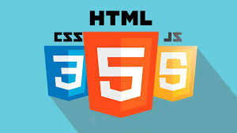

Joana Silva
Desenvolvedora Web e entusiasta de design responsivo. Transformando ideias em experiências digitais fluidas e acessíveis para todos os dispositivos.
Meus Projetos
Projeto Alfa
Um aplicativo de e-commerce com foco na experiência mobile.
Projeto Beta
Website institucional para uma startup de tecnologia.
Projeto Gama
Blog pessoal com layout minimalista e otimizado para leitura.
Projeto Delta
Sistema de gerenciamento de tarefas com interface amigável.
Projeto Épsilon
Plataforma de cursos online com vídeos e materiais de apoio.
Projeto Zeta
Ferramenta de visualização de dados financeiros.